한국사능력검정시험-중급(폐지) (2017-08-21 기출문제)
1. (가) 세대의 생활 모습으로 옳은 것은? [1점]
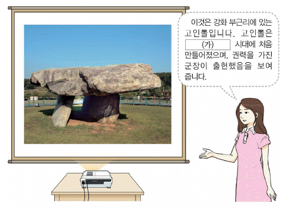
- 우경이 널리 보급되었다.
- 주로 동굴이나 막집에서 살았다.
- 빗살무늬 토기를 제작하기 시작하였다.
- 반달 돌칼을 사용하여 곡식을 수확하였다.
- 실을 뽑기 위해 가락바퀴를 사용하였다.
(정답률: 81%)

2. 다음 대화에 해당하는 나라에 대한 설명으로 옳은 것은? [2점]
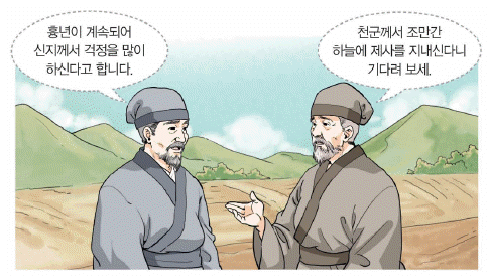
- 신성 지역인 소도가 있었다.
- 서옥제라는 혼인 풍습이 있었다.
- 읍락 간의 경계를 중시한 책화가 있었다.
- 여러 가(加)들이 별도로 사출도를 다스렸다.
- 사회 질서를 유지하기 위해 범금 8조를 만들었다.
(정답률: 77%)
3. 밑줄 그은 ‘왕’의 업적으로 옳은 것은? [2점]
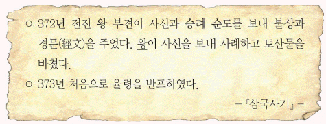
- 태학을 설립하였다.
- 평양으로 천도하였다.
- 우산국을 정벌하였다.
- 독서삼품과를 실시하였다.
- 영락이라는 연호를 사용하였다.
(정답률: 84%)
4. (가)에 들어갈 문화유산으로 옳은 것은? [1점]
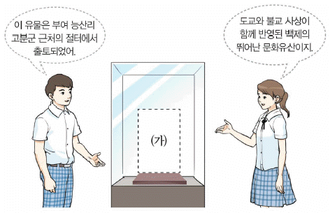
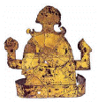
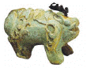
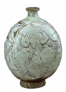
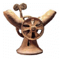
(정답률: 86%)
5. (가)에 들어갈 제목으로 가장 적절한 것은? [2점]
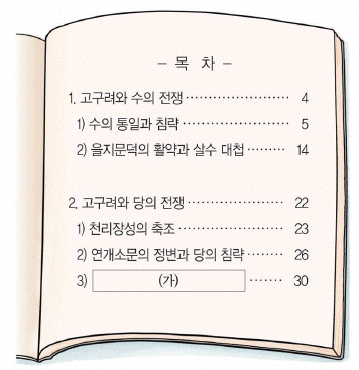
- 백강 전투의 영향
- 기벌포 전투의 결과
- 안시성 전투의 승리
- 한산도 대첩의 의의
- 황산벌 전투의 과정
(정답률: 82%)
6. (가)에 들어갈 문화유산의 사진으로 옳은 것은? [2점]
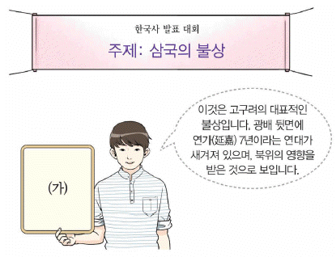
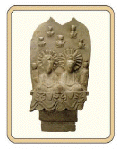
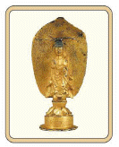
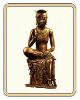
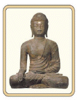
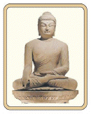
(정답률: 78%)
7. (가)에 들어갈 내용으로 적절하지 않은 것은? [2점]
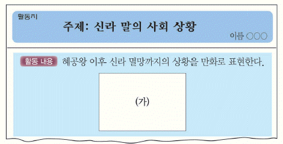
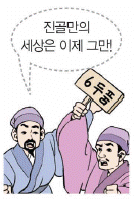
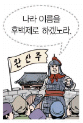
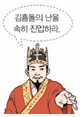
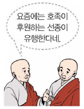
(정답률: 50%)
8. 다음 인물에 대한 설명으로 옳은 것은? [3점]
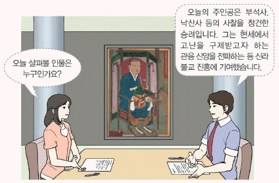
- 신라 화엄종을 개창하였다.
- 왕오천축국전을 저술하였다.
- 대각국사라는 시호를 받았다.
- 정혜쌍수를 수행 방법으로 강조하였다.
- 화랑도의 규범으로 세속 5계를 제시하였다.
(정답률: 56%)
9. (가)~(마)에 들어갈 내용으로 적절하지 않은 것은? [3점]
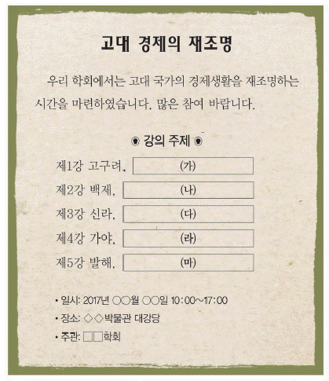
- (가) - 진대법으로 백성을 구휼하다.
- (나) - 벽란도가 국제 무역항으로 번성하다.
- (다) - 금성에 동시를 설치하다.
- (라) - 덩이쇠를 화폐처럼 사용하다.
- (마) - 일본에 담비 가죽을 수출하다.
(정답률: 75%)
10. 밑줄 그은 ‘이 국가’에 대한 설명으로 옳은 것은? [2점]
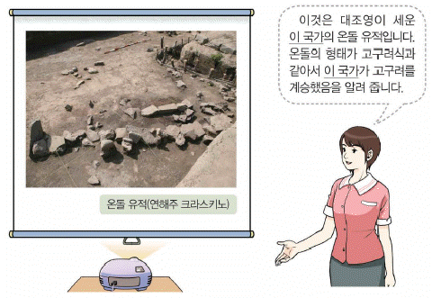
- 한의 침략을 받아 멸망하였다.
- 무왕 때 당의 등주를 공격하였다.
- 도병마사에서 국방 문제를 논의하였다.
- 지방 행정 구역으로 9주 5소경을 두었다.
- 화백 회의에서 국가 중대사를 결정하였다.
(정답률: 69%)
11. 밑줄 그은 ‘국왕’의 업적으로 옳은 것은? [1점]
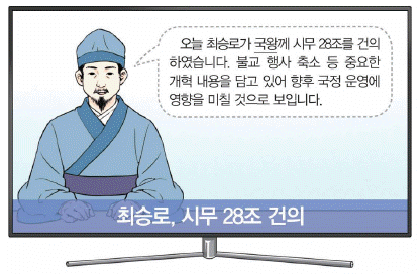
- 12목 설치
- 후삼국 통일
- 몽골 풍속 금지
- 노비안검법 시행
- 전민변정도감 설치
(정답률: 66%)
12. (가)에 들어갈 탑으로 옳은 것은? [2점]
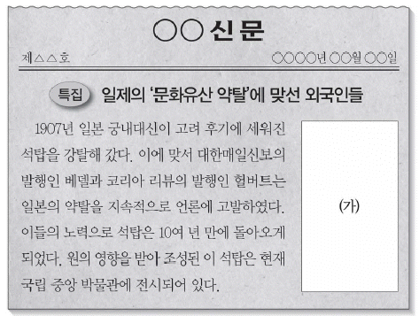
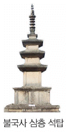
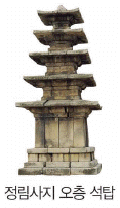
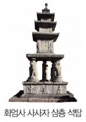
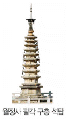
(정답률: 63%)
13. 다음 기행문에 나타난 답사 지역을 지도에서 옳게 찾은 것은? [3점]
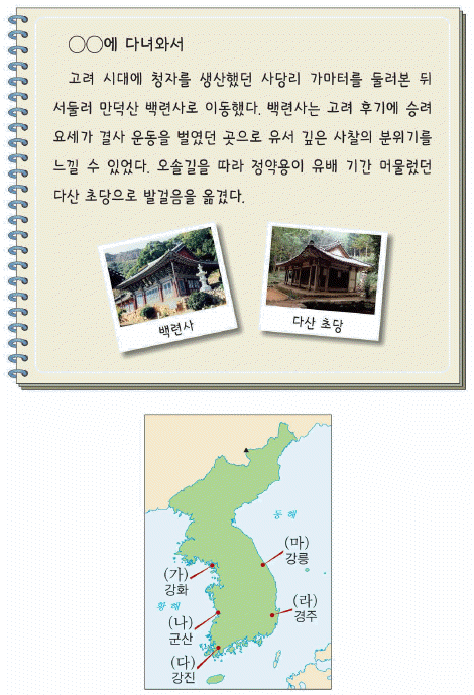
- (가)
- (나)
- (다)
- (라)
- (마)
(정답률: 46%)
14. 다음 두 사건의 공통점으로 옳은 것은? [2점]
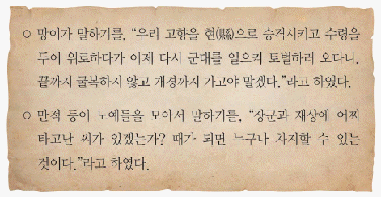
- 고구려 부흥을 내세웠다.
- 무신 집권기에 발생하였다.
- 몽골과의 강화를 반대하였다.
- 정감록의 영향을 받아 일어났다.
- 임술 농민 봉기의 계기가 되었다.
(정답률: 76%)
15. (가) 시기에 있었던 사실로 옳은 것은? [2점]
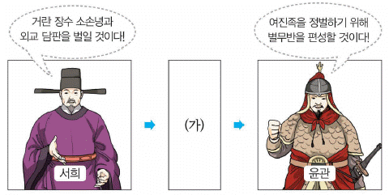
- 김종서가 6진을 개척하였다.
- 박위가 쓰시마섬을 정벌하였다.
- 최영이 요동 정벌을 추진하였다.
- 이성계가 황산에서 왜구를 격퇴하였다.
- 강감찬이 귀주에서 거란군을 물리쳤다.
(정답률: 82%)
16. (가)에 해당하는 역사서로 옳은 것은? [2점]
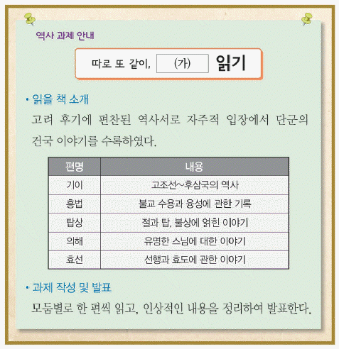
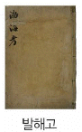
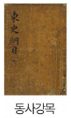
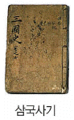
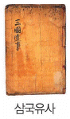
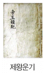
(정답률: 54%)
17. 밑줄 그은 ‘이들’에 대한 설명으로 옳은 것은? [2점]
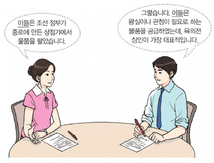
- 각지에 송방이라는 지점을 두었다.
- 의주에 근거지를 두고 청과 교역하였다.
- 금난전권을 통해 사상(私商)을 억압하였다.
- 여러 장시를 하나의 유통망으로 연계시켰다.
- 주로 포구에서 중개ㆍ금융ㆍ숙박 등의 영업을 하였다.
(정답률: 54%)
18. 밑줄 그은 ‘왕’이 추진한 경제 정책으로 옳은 것은? [3점]
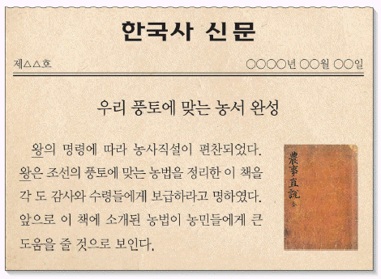
- 지계를 발급하였다.
- 직전법을 폐지하였다.
- 대동법을 실시하였다.
- 건원중보를 발행하였다.
- 연분 9등법을 시행하였다.
(정답률: 63%)
19. (가)에 들어갈 민속놀이로 옳은 것은? [1점]
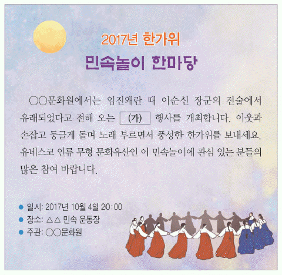
- 강강술래
- 줄다리기
- 차전놀이
- 놋다리밟기
- 남사당놀이
(정답률: 90%)
20. 다음 답사 지역에서 있었던 사실로 옳은 것은? [2점]
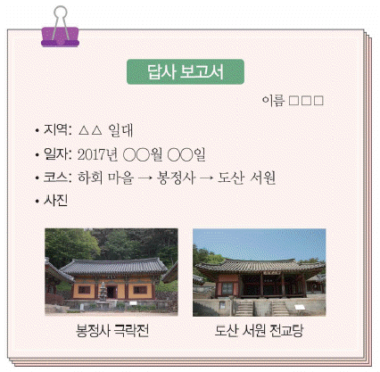
- 장보고가 청해진을 설치하였다.
- 안창호가 대성 학교를 설립하였다.
- 묘청이 천도를 주장하며 난을 일으켰다.
- 공민왕이 홍건적의 침입 때 피란하였다.
- 전봉준이 조병갑의 학정에 반발하여 봉기 하였다.
(정답률: 40%)
21. 다음 왕의 재위 기간에 있었던 사실로 옳은 것은? [2점]
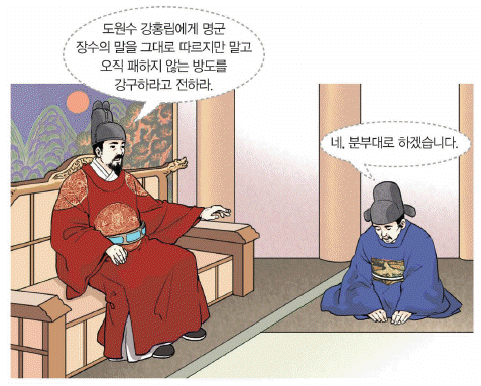
- 과전법 실시
- 별기군 설치
- 경국대전 반포
- 동의보감 완성
- 수원 화성 축조
(정답률: 41%)
22. (가)~(다) 화폐를 처음 발행된 순서대로 옳게 나열한 것은? [1점]
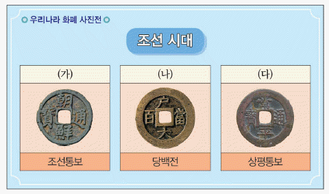
- (가) - (나) - (다)
- (가) - (다) - (나)
- (나) - (가) - (다)
- (나) - (다) - (가)
- (다) - (나) - (가)
(정답률: 61%)
23. 다음 폐단을 해결하기 위해 실시한 정책으로 옳은 것은? [2점]
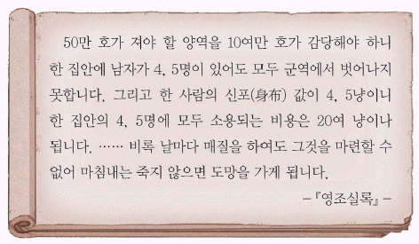
- 개경과 서경에 상평창을 마련하였다.
- 토지 1결당 쌀 4두를 납부하게 하였다.
- 흑창을 개편하여 의창으로 운영하였다.
- 1년에 2필씩 걷던 군포를 1필로 줄였다.
- 향촌에서 자치적으로 운영하는 사창을 설치하였다.
(정답률: 75%)
24. 다음 궁궐에 대한 설명으로 옳은 것은? [2점](오류 신고가 접수된 문제입니다. 반드시 정답과 해설을 확인하시기 바랍니다.)
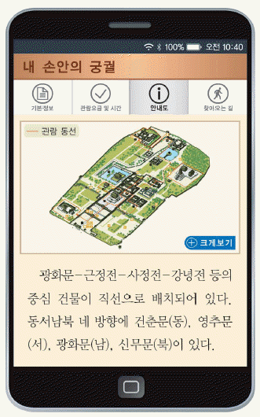
- 서양식 건물인 석조전이 있다.
- 유네스코 세계유산으로 등재되었다.
- 아관 파천 이후에 고종이 환궁한 곳이다.
- 역대 국왕과 왕비의 신주가 모셔져 있다.
- 태조 때 한양으로 천도하면서 창건되었다.
(정답률: 42%)
25. (가) 인물의 활동으로 옳은 것은? [3점]
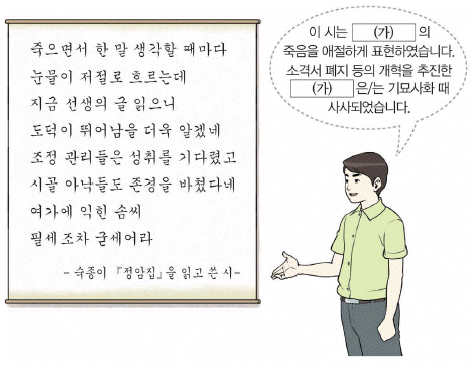
- 여전론을 주장하였다.
- 성학집요를 저술하였다.
- 강화 학파를 형성하였다.
- 백운동 서원을 건립하였다.
- 현량과 실시를 건의하였다.
(정답률: 66%)
26. 다음 검색창에 들어갈 인물로 옳은 것은? [1점]
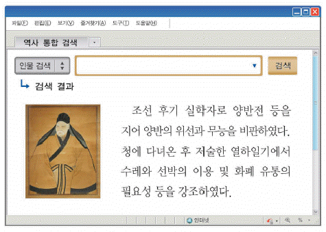
- 이익
- 박제가
- 박지원
- 유형원
- 홍대용
(정답률: 76%)
27. 다음 퀴즈의 정답으로 옳은 것은? [2점]
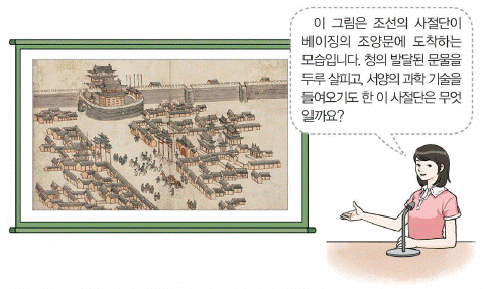
(정답률: 32%)
28. 다음 가상 뉴스에서 보도하고 있는 사건이 일어난 시기를 연표에서 옳게 고은 것은? [2점]
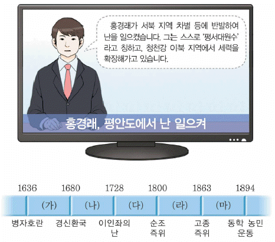
- (가)
- (나)
- (다)
- (라)
- (마)
(정답률: 45%)
29. (가) 인물에 대한 설명으로 옳은 것은? [3점]
- 북벌을 주장하였다.
- 거중기를 설계하였다.
- 대동여지도를 제작하였다.
- 성리학을 처음 소개하였다.
- 훈련도감 설치를 건의하였다.
(정답률: 57%)
30. (가)에 들어갈 내용으로 옳은 것은? [2점]
- 나선 정벌이 단행되었어요.
- 6조 직계제가 처음 실시되었어요.
- 사림이 동인과 서인으로 나뉘었어요.
- 외척 간의 다툼으로 을사사화가 일어났어요.
- 안동 김씨 등 소수의 가문이 권력을 독점하였어요.
(정답률: 74%)
31. 밑줄 그은 ㉠에 대한 탐구 활동으로 가장 적절한 것은? [1점]
- 임진왜란의 결과를 알아본다.
- 금속과안록의 내용을 살펴본다.
- 독립문을 세운 단체를 검색한다.
- 삼전도비의 건립 배경을 찾아본다.
- 흥선 대원군의 대외 정책을 조사한다.
(정답률: 79%)
32. (가), (나) 사건의 공통된 결과로 옳은 것은? [2점]
- 집강소가 설치되었다.
- 거문도가 불법 점령되었다.
- 외규장각 도서가 약탈되었다.
- 청의 내정 간섭이 심화되었다.
- 부산, 원산, 인천이 개항되었다.
(정답률: 79%)
33. 밑줄 그은 ‘개혁’의 내용으로 옳은 것은? [2점]
- 정방 폐지
- 단발령 실시
- 만동묘 철폐
- 한성순보 발행
- 통리기무아문 설치
(정답률: 71%)
34. 밑줄 그은 ‘의병’에 대한 설명으로 옳지 않은 것은? [2점]
- 고종의 강제 퇴위에 반발하였다.
- 포수와 농민 등 평민들이 대다수였다.
- 곽재우, 고경명 등이 의병장으로 활약하였다.
- 국제법상의 교전 단체로 인정해 줄 것을 요구하였다.
- 13도 창의군을 결성하여 서울 진공 작전을 전개하였다.
(정답률: 38%)
35. 다음 검색창에 들어갈 학교로 옳은 것은? [2점]
- 서전서숙
- 명동 학교
- 배재 학당
- 오산 학교
- 신흥 무관 학교
(정답률: 71%)
36. 학생들이 이야기하는 근대 문물에 대한 설명으로 옳은 것은? [3점]
- 영선사의 건의로 만들어졌다.
- 한성 전보 총국에서 운영하였다.
- 처음에는 프랑스가 부설권을 가졌다.
- 간도 협약에 따라 일본이 완공하였다.
- 서대문과 청량리 구간에서 운행이 시작되었다.
(정답률: 54%)
37. 다음 인물에 대한 설명으로 옳은 것은? [2점]
- 청산리 대첩을 이끌었다.
- 한인 애국단을 조직하였다.
- 헤이그에 특사로 파견되었다.
- 조선 혁명 선언을 작성하였다.
- 우리말 큰사전 편찬을 주도하였다.
(정답률: 62%)
38. (가)에 들어갈 내용으로 가장 적절한 것은? [2점]
- 백두산정계비문 분석
- 방곡령 실시 지역 분포
- 군국기무처의 기능과 역할
- 공출제와 금속 공출량 통계
- 동양 척식 주식회사의 주요 사업
(정답률: 72%)
39. 다음 제도가 시행된 시기에 볼 수 있는 모습으로 적절한 것은? [1점]
- 제복을 입고 칼을 찬 교사
- 영화 아리랑을 제작하는 감독
- 원산 총파업에 동참하는 부두 노동자
- 조선 민립 대학 기성회에 성금을 내는 상인
- 근우회가 개최한 강연회에서 연설하는 여성
(정답률: 83%)
40. (가) 운동에 대한 설명으로 옳은 것은? [1점]
- 동아일보사가 주도하여 일어났다.
- 진주에서 시작하여 전국으로 확산되었다.
- 러시아의 절영도 조차 요구를 저지하였다.
- 일제의 무단 통치가 바뀌는 계기가 되었다.
- 순종의 인산일에 학생들의 주도로 전개되었다.
(정답률: 65%)
41. 교사의 질문에 대한 학생의 답변으로 옳은 것은? [3점]
- 을사늑약이 체결되었어요.
- 김익상이 폭탄을 던졌어요.
- 미ㆍ소 공동 위원회가 열렸어요.
- 2ㆍ8 독립 선언이 발표되었어요.
- 안중근이 이토 히로부미를 사살하였어요.
(정답률: 45%)
42. 밑줄 그은 ‘단체’에 대한 설명으로 옳은 것은? [2점]
- 국채 보상 운동을 전개하였다.
- 자기 회사, 태극 서관 등을 설립하였다.
- 일제의 황무지 개간권 요구를 철회시켰다.
- 통감부의 방해와 탄압 등으로 해산되었다.
- 비타협적 민족주의자들과 사회주의자들이 결성하였다.
(정답률: 53%)
43. 밑줄 그은 ‘조직’으로 옳은 것은? [2점]
- 연통제
- 중광단
- 참의부
- 대한 광복회
- 독립 의군부
(정답률: 49%)
44. (가)에 해당하는 인물로 옳은 것은? [1점]
(정답률: 66%)
45. 밑줄 그은 ‘시기’에 있었던 사실로 옳지 않은 것은? [3점]
- 징병제가 실시되었다.
- 신사 참배가 강요되었다.
- 조선 태형령이 시행되었다.
- 국민 징용령이 공포되었다.
- 여자 정신 근로령이 제정되었다.
(정답률: 60%)
46. 교사의 질문에 대한 학생의 답변으로 옳은 것은? [2점]
- 국내 진공 작전을 계획했어요.
- 조선 혁명 간부 학교를 설립했어요.
- 자유시 참변 이후 3부를 조직했어요.
- 봉오동 전투에서 일본군을 격퇴했어요.
- 중국군과 함께 쌍성보 전투에서 큰 전과를 올렸어요.
(정답률: 50%)
47. (가)에 들어갈 내용으로 가장 적절한 것은? [3점]
- 발췌 개헌안의 내용을 살펴본다.
- 제주 4ㆍ3 사건의 진상을 알아본다.
- 5ㆍ10 총선거에 출마한 인물들을 검색한다.
- 조선 건국 준비 위원회의 설립 과정을 조사한다.
- 조선어 학회 사건으로 구속된 인물들을 찾아본다.
(정답률: 66%)
48. (가) 민주화 운동에 대한 설명으로 옳은 것은? [2점]
- 유신 헌법에 반발하여 일어났다.
- 일본과의 국교 정상화에 반대하였다.
- 대통령이 하야하는 결과를 가져왔다.
- 계엄군의 무력 진압으로 시민들이 희생되었다.
- 대통령 직선제 개헌이 이루어지는 계기가 되었다.
(정답률: 36%)
49. 다음 사건이 있었던 정부 시기의 경제 상황으로 옳은 것은? [2점]
- 금융 실명제를 실시하였다.
- 경부 고속 국도를 건설하였다.
- 경제 협력 개발 기구(OECD)에 가입하였다.
- 칠레와 자유 무역 협정(FTA)을 체결하였다.
- 국제 통화 기금(IMF)에서 구제 금융을 지원 받았다.
(정답률: 63%)
50. 다음 정부의 통일 노력으로 옳은 것은? [2점]
- 남북 조절 위원회가 열렸다.
- 남북 기본 합의서를 채택하였다.
- 7ㆍ4 남북 공동 성명을 발표하였다.
- 제2차 남북 정상 회담을 개최하였다.
- 남북 간 이산가족 상봉이 최초로 이루어졌다.
(정답률: 60%)